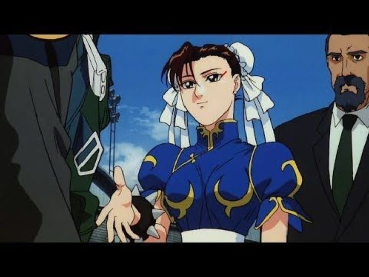

If you were to ask an older anime fan for some film recomendation from the 1990's and beyond, they ought to have a go-to list of things they fondly remember. "Akira," "Ghost in the Shell" and "Ninja Scroll" are obvious choices, along with perhaps "Vampire Hunter D" and "Perfect Blue"... and "Street Fighter II - The Animated Movie?" That's an oddly geeky choice, for reasons the least of which being that the title comes from the movie being loosely based on the second game of the famed fighting game franchise, not because this movie itself is a sequel to anything. The 2D fighting video-games have persevered through the decades, surviving through highs and lows, and to this day gaming tournaments will go back to "Street Fighter II" as a classic sport, made possible though numerous ports on modern consoles. It also spawned a wide variety of merchandise and spin-offs in comics, novels, film (live action and animated) and television. There is hardly any story to the series, only a bullet-list of backstory points to its international characters, ranging from evil to justice-seeking, to someone just looking for a good battle."Street Fighter II - The Animated Movie" is one of the better adaptations of the games, which isn't saying much. The film itself has little in the way of story, just like the game. So why is it still remembered at all? Because of the fanservice in seeing dozens of classic characters? Because of the action choreography? Perhaps, but its legend comes from the numerous edited cuts that exist, all of which are included (as well as a fascinating commentary on the exact differences) on Discotek's 2016 Bluray release. As it explains, the original film in Japan had a fair bit of violence and bloodshed, and a brief scene of nudity featuring Chun-Li in the shower, with a clean shot of her exposed breasts and bum. The video games were always violent, but at the time the pixel graphics made them accessible to even young children; for there to exist a licensed and canon animated scene of one its most popular characters was a dream come true for teenage boys, and such an opportunity would never manifest again in the decades that followed. When the film was distributed in America, it was first released in a PG-13 version, removing the nudity and excessive violence. Later, an "unrated" version would put back in the violence and a bit of the nudity, and slightly more profane language. In Europe, audiences received the American "unrated" version with even more excessive language, in an attempt to appear cooler to an older target audience, and reportedly Australia would receive the full unrated Japanese cut, butt and all. The changes go even further for the American version: the music was almost entirely replaced, from the original Japanese songs recalling older and more romantic samurai films, to an metal rock track more in tune to what game fans would expect. If you had ever seen the movie, discussions with fans would tend to be about "which version did you see," with Chun-Li's shower scene being the most coveted prize. Discotek apparently had to go to great lengths to provide the full uncut film with the old English dub for the first time in the world (numerous English and Japanese sound mixes exist on the disc release), something that remaining fans have greatly appreciated.But if you aren't familiar with the mythology of the release, is it still worth seeing the movie? "Street Fighter II" doesn't break much new ground in either story or animation. The story follows multiple groups, from Chun-Li and Guile, Ken, and Ryu, while the evil force called "Shadowlaw" (the English name of the organization would be changed in different game entries - I'm familar with "Shadowloo" myself), led by M. Bison, travels the world in search of the most powerful fighters to create their armies. Initially random, their journeys around the world come to a head when Ryu and Ken have to fight M. Bison directly. While the story doesn't have much meat, it is impressive that the movie is still watchable and easy to follow. There are a good number of fight scenes that feature different characters (if only for a minute), and you might even recognize a character or two just sitting in the background quietly. Aside from that type of fanservice, the individual fight scenes are fairly good set pieces, be it Blanka VS Zangief in a Casino match or Chun-Li VS Vega in her hotel room. Generally, the characters are diverse and fun to watch, particularly Chun-Li's playful schooling of Guile. And yes, Chun-Li has a lengthy shower-scene, and even Ken is seen breifly in the buff, muscles and all. The production values seem meek today, but mostly due to the period of its production rather than a lack of skill. The character designs look the part, although their styles instantly give away the film's age. Some of the background environments are impressively detailed and clearly hand-painted (obviously, everything was painted, but such a thing is rare today that it is worth mentioning). The animation picks up a bit during a few of the action scenes, but not all of them: it is clear that the animators were careful in where time and money was spent. If you took the best-looking minute of animation from the movie, a modern viewer might be impressed, but on average the movie looks barely passable. As for the English dub vs Japanese, I do think the Japanese voices do much better, especially when comparing Ryu's bland English voice, although fans might have fonder memories on some of the hilariously bad or cheesy English dialogue. On the other hand, the English rock audio track feels much more appropriate, as the unique Japanese music tries to make the story more meaningful than it really is. Both give an entirely different tone, making it worth rewatching the different versions if you can. And given how long the movie is and how it drags a bit (the original edited cut took out about a minute of unncessarily long walking shots), you might understand why the film was originally cut in America. "Sreet Fighter II - The Animated Movie" is definitely a product of its time, and normally would be an action movie only worth seeking if you are a die-hard "Street Fighter" fan, or if you are seeking some 90's nostalgia. But because of the backstory and differences in the film's release, it remains a fascinating part of anime history and culture.
- "Ani" More reviews can be found at : https://2danicritic.github.io/ Previous review: review_Steins;Gate_The_Movie_-_Load_Region_of_Deja_Vu Next review: review_Summer_Days_with_Coo